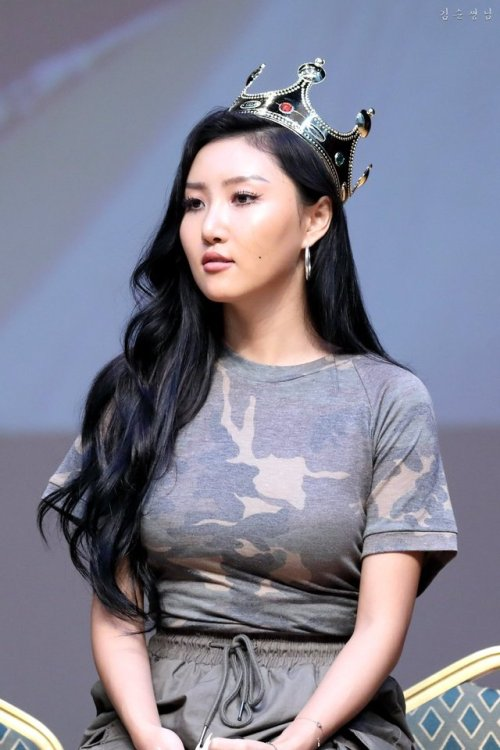

Hwasa’s Comeback and Mamamoo’s Upcoming Concert

Artists are being forced to adapt to change due to the quarantine caused by COVID-19, so it is to our great pleasure to
say that Moonbyul’s (concert performance thing) was successful despite the constraints that she and the production team were
forced to go through in transitioning to online platforms.
Now it is Hwasa’s turn to stand in the spotlight. With a comeback that started on June 29, she has been leaving Moomoos
around the world starstruck with her with her new album “Maria” which came with music video releases for “Maria” and “LMM.”
The album focuses on Hwasa’s self-image, especially as she is no stranger to online hate. For those new to the fandom,
Hwasa has drawn criticism from the way she dresses and she has been battling the Korean beauty standard for many years
throughout her professional career. She has been able to freely express herself in Mamamoo’s unorthodox image and style.
Meanwhile Mamamoo as a whole will be part of Online Dream Concert “CONNECT:D” along with other Kpop idols. The concert
will begin at July 25 and end at July 26. Mamamoo’s performance will be on the second day (in case you’re there to
watch only them). With how a previous concert of this type went, we can expect around 2-3 performances. But with a
timespan of two days, it might be longer this time.
Pray that our queens stay safe and healthy during these trying times.